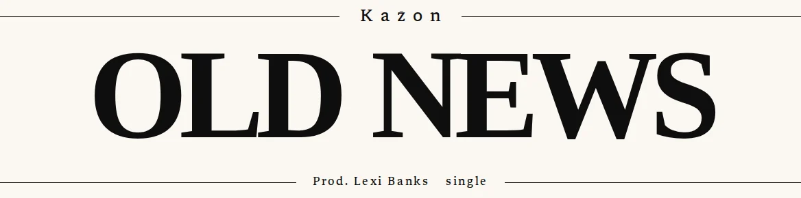

D8.1-AKeep Georgia 900
Today
Kazon
Old News
Prod. Lexi Bankssingle
Checking whether this browser has Georgia…
- What changes
- Nothing.
- Why it could be better
- Mac, Windows and iPhone visitors keep the Georgia Bold the premiere shipped with. No work, and nothing new to review.
- Trade-off
- At least three looks in the wild: Georgia Bold on Mac, Windows and iPhone, and different substitutes on Android and Linux (the CI capture above is one of them). The 900 asks for a weight Georgia doesn’t have. The family stays outside the type tokens.
- Effort
- None
- Files
- None
- Guideline check
- Copy unchanged · Tokens: outside them (a named family in a page stylesheet) · Licence: Georgia is a Microsoft system font; the site doesn’t self-host it and can’t, so the face depends on the visitor’s device · Contrast: ink on paper 18.2:1 · Motion: none · Image QA: not needed